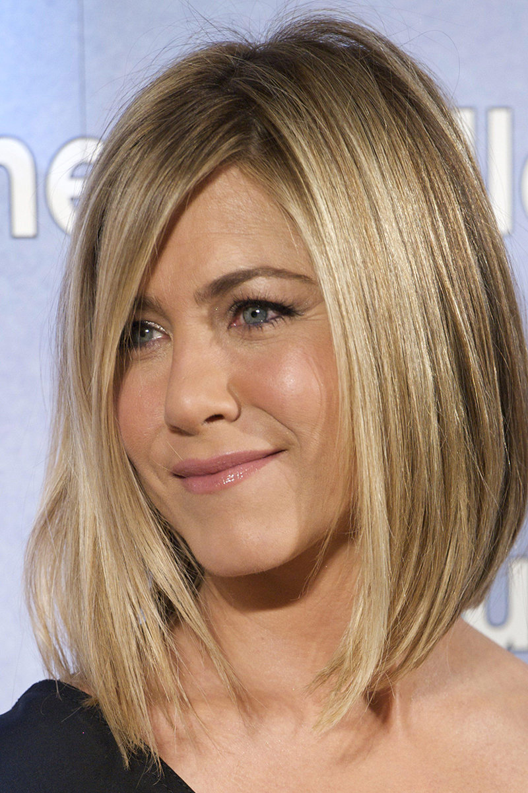
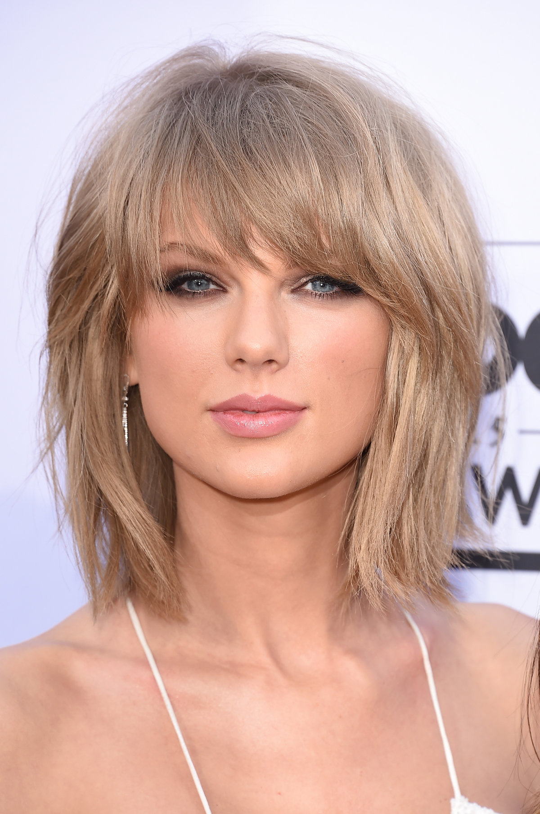
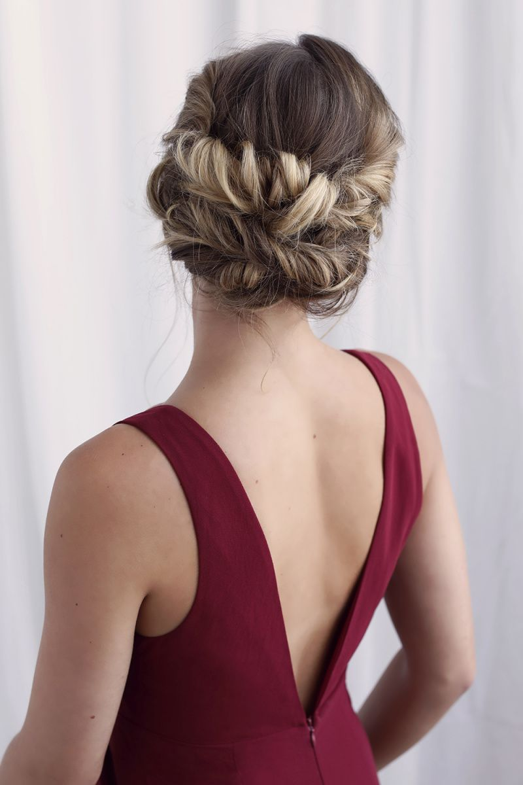

Стрижки на средние волосы
Ровный срез

На многих подиумах модели восхищали идеально ровным каре,
которое восхитительно смотрится не только на короткой,
но и на средней длине. Если вы предпочтете эту стрижку,
то можете дополнить ее самой модной укладкой сезона – мокрый эффект,
созданный с помощью геля для волос в сочетании с великолепным глянцевым блеском.
Два уровня

Двухуровневое каре – это идеальный тренд для тонкой и негустой шевелюры.
Изюминка этой стрижки заключается в сочетании классической версии каре
с удлиненными передними и укороченными задними прядями. Обязательным условием является и градуировка – именно он
создает дополнительную пышность и позволяет создавать ультрамодные укладки с легкими локонами.
Боб

Стрижки боб и боб-каре на средней длине вновь бьют все рекорды по популярности грядущего года.
Главная фишка таких трендов – это универсальность. Эти прически одинаково хорошо подходят как для молодых девушек,
так для женщин за 50. Боб – это та самая стрижка, с которой можно примерять на себя разные образы.
Каскад

Каскад – одна из самых часто встречающихся стрижек всех времен.
Она вошла в моду благодаря знойным итальянским женщинам,
которые искали способ сделать свои жесткие густые волнистые волосы более послушными
и в то же время не желали тратить время на укладку. В итоге мир получил классическую каскадную стрижку.
Стрижки из 70-х

Женские стрижки 2020 вдохновлены тенденциями разных эпох,
в том числе и 70-х. Это годы панка, хиппи, унисекса.
Классический сессон, который до сих пор носит Мирей Марье,
дерзкий гаврош, милое пикси и прочие короткие стрижки из тех времён актуальны и в XXI веке,
только с небольшими изменениями, которые передают дух времени.
Многие стильные стрижки 2020 основаны на идеях прошлого, но при этом выглядят модно и свежо.
Корзинка

Плетение корзинка — это один из самых точных способов сделать красивый,
женственный и притягательный лук. Тонкие волосы нельзя заплетать в слишком тугие косы,
поэтому плетение корзинка не должна иметь слишком затянутые звенья.
Свободные хвосты

Если у вас длинные тонкие волосы, то свободные хвосты именно то,
что вам нужно. Тонкие волосы не будут слишком стянуты резинкой,
а наоборот, будут чувствовать себя свободно, при том, что сформирована аккуратная укладка.
Свободные хвосты могут содержать дополнительные плетения косичек (не тугих),
жгутов, различных украшений и даже небольшого начеса. Все будет точно зависеть от мероприятия на которое вы идете.